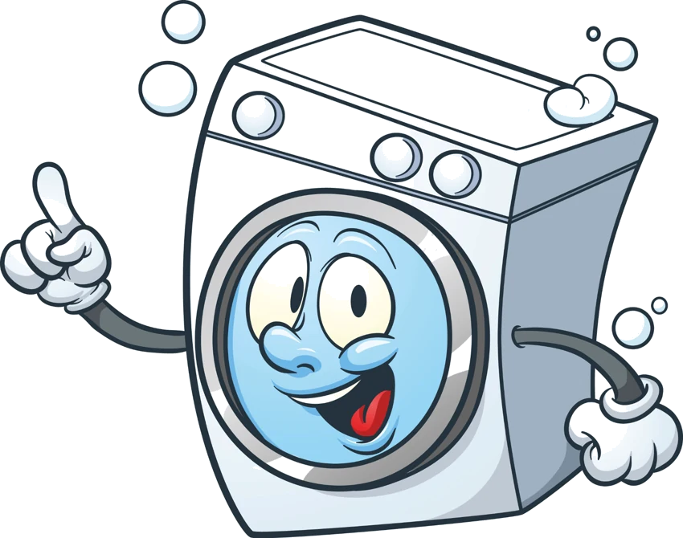

Pranje i peglanje
Profesionalno pranje i peglanje uz pažljiv tretman svih vrsta tekstila.

PRO WASH COPERIONICA VEŠAPRO WASH CO
Profesionalno pranje i peglanje veša za fizička lica i poslovne korisnike u Kragujevcu.
Profesionalno pranje i peglanje uz pažljiv tretman svih vrsta tekstila.
Kvalitetni deterdženti i sredstva za higijenu i uklanjanje nečistoća.
Za poslovne korisnike. Besplatno preuzimanje i dostava za količine preko 10 kg.
Pranje na odgovarajućoj temperaturi, odvojeno od veša drugih korisnika.
Nudimo pranje i održavanje radne odeće, uniformi, radnih krpa i drugog poslovnog tekstila. Termine preuzimanja i dostave dogovaramo prema vašim potrebama.
Dogovorite testno pranje do 10 kg →Kvalitetna čistoćaProfesionalni deterdženti i sredstva
LogistikaPreuzimanje i dostava na vašu adresu
Odvojeno pranjeRadni tekstil odvojen od ostalog veša
Usluga po meriFleksibilni termini i prilagođena ponuda
Posetite nas ili nas pozovite
Pro Wash COCara Lazara 4, Kragujevac
Radno vremePonedeljak–petak: 09:00–20:00Subota: 09:00–15:00Nedelja: Neradni dan